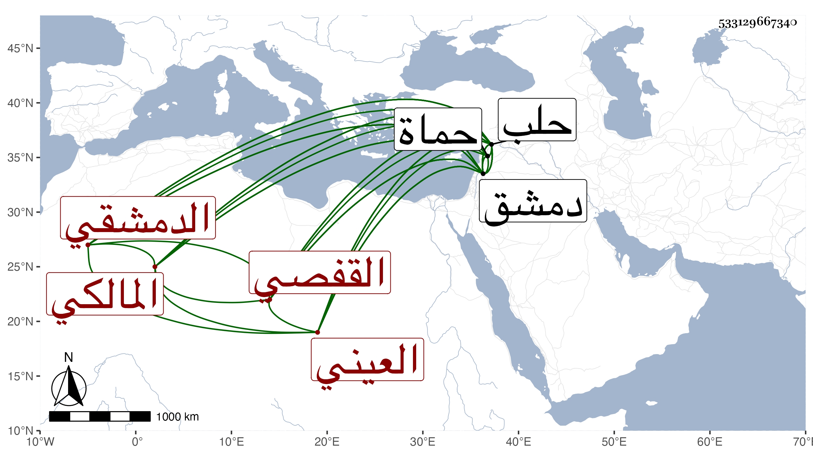

0902Sakhawi.DawLamic.ITO20230111-ara1.EIS1600.533129667340
Biography ID: 533129667340
30
محمد بن محمد بن محمد علم الدين ولقبه العيني جمال الدين بن ناصر الدين القفصي الدمشقي المالكي . ولي قضاء دمشق إحدى عشرة مرة في مدة خمس وعشرين سنة أولها في رجب سنة تسع وسبعين باشر منها ثمان سنين وعشرة أشهر ومات وهو قاض وكذا ولي حماة مرارا وحلب إما مرتين أو ثلاثا . وكان عفيفا له عناية بالعلم مع قصور في الفهم ونقص عقل ولديه إكرام للطلبة وكان جده قد قدم دمشق في سنة تسع عشرة فناب في الحكم وكان أبوه جنديا وألبس ولده كذلك ثم شغله بالعلم وهو كبير ودار على الدروس واشتغل كثيرا . قال ابن خطيب الناصرية : أصيب في الوقعة الكبرى بما له وأسرت له ابنة وسكن عقب الفتنة بقرية من قرى سمعان إلى أن انزاح الططر عن البلاد فرجع إلى حلب على ولايته ، قال وكانت بيننا صحبة وكان يكرمني وولاني عدة وظائف علمية ثم توجه من حلب إلى دمشق فقطنها وولي قضاءها . ومات بها على قضائه في المحرم سنة خمس ولم يكمل الستين . وذكره شيخنا في إنبائه رحمه الله .
